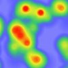
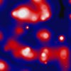
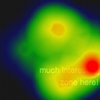
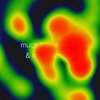
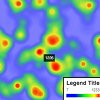

-

最低配置热力图
Kickstart的示例，最低的热力图配置，让你快速启动热力图！
基础
-
自定义点数据
演示了点数据半径配置的示例，以便你可以使用不同的辐射范围来可视化点。
基础
-

完全自定义热力图
想要用自己的颜色创建一个完全自定义的热图？这个例子是你要找的！
基础
-

鼠标点击热力图
利用heatmap.js的运行时数据操作API来显示动态鼠标点击热图的一个例子。
基础
-

鼠标移动热力图
和鼠标点击热力图相似，只不过数据来源是鼠标移动和点击事件。
基础
-

图例 & 提示
演示如何使用当前鼠标位置的值添加图例和工具提示的示例。
Jedi Master (jk)